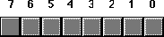
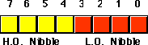
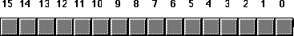
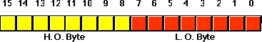
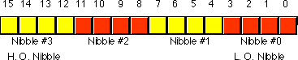
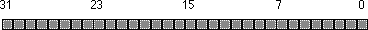
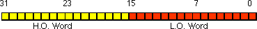
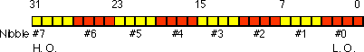

Chapter One (Part
2) |
|
Chapter One (Part
2) |
|
| CHAPTER
ONE: DATA REPRESENTATION (Part 1) |
||
| 1.0 -
Chapter Overview 1.1 - Numbering Systems 1.1.1 - A Review of the Decimal System 1.1.2 - The Binary Numbering System 1.1.3 - Binary Formats 1.2 - Data Organization 1.2.1 - Bits 1.2.2 - Nibbles 1.2.3 - Bytes 1.2.4 - Words 1.2.5 - Double Words 1.3 - The Hexadecimal Numbering System 1.4 - Arithmetic Operations on Binary and Hexadecimal Numbers 1.5 - Logical Operations on Bits 1.6 - Logical Operations on Binary Numbers and Bit Strings 1.7 - Signed and Unsigned Numbers 1.8 - Sign and Zero Extension 1.9 - Shifts and Rotates 1.10 - Bit Fields and Packed Data 1.11 - The ASCII Character Set |
Copyright 1996 by Randall Hyde
All rights reserved. Duplication other than for immediate display through a browser is prohibited by U.S. Copyright Law. This material is provided on-line as a beta-test of this text. It is for the personal use of the reader only. If you are interested in using this material as part of a course, please contact rhyde@cs.ucr.edu Supporting software and other materials are available via anonymous ftp from ftp.cs.ucr.edu. See the "/pub/pc/ibmpcdir" directory for details. You may also download the material from "Randall Hyde's Assembly Language Page" at URL: http://webster.ucr.edu Notes: This document does not contain the laboratory exercises, programming assignments, exercises, or chapter summary. These portions were omitted for several reasons: either they wouldn't format properly, they contained hyperlinks that were too much work to resolve, they were under constant revision, or they were not included for security reasons. Such omission should have very little impact on the reader interested in learning this material or evaluating this document. This document was prepared using Harlequin's Web Maker 2.2 and Quadralay's Webworks Publisher. Since HTML does not support the rich formatting options available in Framemaker, this document is only an approximation of the actual chapter from the textbook. If you are absolutely dying to get your hands on a version other than HTML, you might consider having the UCR Printing a Reprographics Department run you off a copy on their Xerox machines. For details, please read the following EMAIL message I received from the Printing and Reprographics Department:
We are currently working on ways to publish this text in a form other than HTML (e.g., Postscript, PDF, Frameviewer, hard copy, etc.). This, however, is a low-priority project. Please do not contact Randall Hyde concerning this effort. When something happens, an announcement will appear on "Randall Hyde's Assembly Language Page." Please visit this WEB site at http://webster.ucr.edu for the latest scoop. Redesigned 10/2000 with "MS FrontPage 98" using
17" monitor 1024x768 |
|
Probably the biggest stumbling block most beginners encounter when attempting to learn assembly language is the common use of the binary and hexadecimal numbering systems. Many programmers think that hexadecimal (or hex) numbers represent absolute proof that God never intended anyone to work in assembly language. While it is true that hexadecimal numbers are a little different from what you may be used to, their advantages outweigh their disadvantages by a large margin. Nevertheless, understanding these numbering systems is important because their use simplifies other complex topics including boolean algebra and logic design, signed numeric representation, character codes, and packed data.
This chapter discusses several important concepts including the binary and hexadecimal numbering systems, binary data organization (bits, nibbles, bytes, words, and double words), signed and unsigned numbering systems, arithmetic, logical, shift, and rotate operations on binary values, bit fields and packed data, and the ASCII character set. This is basic material and the remainder of this text depends upon your understanding of these concepts. If you are already familiar with these terms from other courses or study, you should at least skim this material before proceeding to the next chapter. If you are unfamiliar with this material, or only vaguely familiar with it, you should study it carefully before proceeding. All of the material in this chapter is important! Do not skip over any material.
Most modern computer systems do not represent numeric values using the decimal system. Instead, they typically use a binary or two's complement numbering system. To understand the limitations of computer arithmetic, you must understand how computers represent numbers.
1.1.1 A Review of the Decimal System
You've been using the decimal (base 10) numbering system for so long that you probably take it for granted. When you see a number like "123", you don't think about the value 123; rather, you generate a mental image of how many items this value represents. In reality, however, the number 123 represents ("**" represents exponentiation):
1*10**2 + 2 * 10**1 + 3*10**0
or
100+20+3
Each digit appearing to the left of the decimal point represents a value between zero and nine times an increasing power of ten. Digits appearing to the right of the decimal point represent a value between zero and nine times an increasing negative power of ten. For example, the value 123.456 means:
1*10**2 + 2*10**1 + 3*10**0 + 4*10**-1 + 5*10**-2 + 6*10**-3
or
100 + 20 + 3 + 0.4 + 0.05 + 0.006
1.1.2 The Binary Numbering System
Most modern computer systems (including the IBM PC) operate using binary logic. The computer represents values using two voltage levels (usually 0v and +5v). With two such levels we can represent exactly two different values. These could be any two different values, but by convention we use the values zero and one. These two values, coincidentally, correspond to the two digits used by the binary numbering system. Since there is a correspondence between the logic levels used by the 80x86 and the two digits used in the binary numbering system, it should come as no surprise that the IBM PC employs the binary numbering system.
The binary numbering system works just like the decimal numbering system, with two exceptions: binary only allows the digits 0 and 1 (rather than 0-9), and binary uses powers of two rather than powers of ten. Therefore, it is very easy to convert a binary number to decimal. For each "1" in the binary string, add in 2**n where "n" is the zero-based position of the binary digit. For example, the binary value 11001010 represents:
1*2**7 + 1*2**6 + 0*2**5 + 0*2**4 + 1*2**3 + 0*2**2 + 1*2**1 + 0*2**0 = 128 + 64 + 8 + 2 = 202 (base 10)
To convert decimal to binary is slightly more difficult. You must find those powers of two which, when added together, produce the decimal result. The easiest method is to work from the a large power of two down to 2**0. Consider the decimal value 1359:
Binary numbers, although they have little importance in high level languages, appear everywhere in assembly language programs.
In the purest sense, every binary number contains an infinite number of digits (or bits which is short for binary digits). For example, we can represent the number five by:
101 00000101 0000000000101 ... 000000000000101
Any number of leading zero bits may precede the binary number without changing its value.
We will adopt the convention ignoring any leading zeros. For example, 101 (binary) represents the number five. Since the 80x86 works with groups of eight bits, we'll find it much easier to zero extend all binary numbers to some multiple of four or eight bits. Therefore, following this convention, we'd represent the number five as 0101 (binary) or 00000101 (binary).
In the United States, most people separate every three digits with a comma to make larger numbers easier to read. For example, 1,023,435,208 is much easier to read and comprehend than 1023435208. We'll adopt a similar convention in this text for binary numbers. We will separate each group of four binary bits with a space. For example, the binary value 1010111110110010 will be written 1010 1111 1011 0010.
We often pack several values together into the same binary number. One form of the 80x86 MOV instruction (see appendix D) uses the binary encoding 1011 0rrr dddd dddd to pack three items into 16 bits: a five-bit operation code (10110), a three-bit register field (rrr), and an eight-bit immediate value (dddd dddd). For convenience, we'll assign a numeric value to each bit position. We'll number each bit as follows:
1) The rightmost bit in a binary number is bit position zero.
2) Each bit to the left is given the next successive bit number.
An eight-bit binary value uses bits zero through seven:
X7 X6 X5 X4 X3 X2 X1 X0
A 16-bit binary value uses bit positions zero through fifteen:
X15 X14 X13 X12 X11 X10 X9 X8 X7 X6 X5 X4 X3 X2 X1 X0
Bit zero is usually referred to as the low order ( L.O.) bit. The left-most bit is typically called the high order ( H.O.) bit. We'll refer to the intermediate bits by their respective bit numbers.
In pure mathematics a value may take an arbitrary number of bits. Computers, on the other hand, generally work with some specific number of bits. Common collections are single bits, groups of four bits (called nibbles), groups of eight bits (called bytes), groups of 16 bits (called words), and more. The sizes are not arbitrary. There is a good reason for these particular values. This section will describe the bit groups commonly used on the Intel 80x86 chips.
The smallest "unit" of data on a binary computer is a single bit. Since a single bit is capable of representing only two different values (typically zero or one) you may get the impression that there are a very small number of items you can represent with a single bit. Not true! There are an infinite number of items you can represent with a single bit.
With a single bit, you can represent any two distinct items. Examples include zero or one, true or false, on or off, male or female, and right or wrong. However, you are not limited to representing binary data types (that is, those objects which have only two distinct values). You could use a single bit to represent the numbers 723 and 1,245. Or perhaps 6,254 and 5. You could also use a single bit to represent the colors red and blue. You could even represent two unrelated objects with a single bit,. For example, you could represent the color red and the number 3,256 with a single bit. You can represent any two different values with a single bit. However, you can represent only two different values with a single bit.
To confuse things even more, different bits can represent different things. For example, one bit might be used to represent the values zero and one, while an adjacent bit might be used to represent the values true and false. How can you tell by looking at the bits? The answer, of course, is that you can't. But this illustrates the whole idea behind computer data structures: data is what you define it to be. If you use a bit to represent a boolean (true/false) value then that bit (by your definition) represents true or false. For the bit to have any true meaning, you must be consistent. That is, if you're using a bit to represent true or false at one point in your program, you shouldn't use the true/false value stored in that bit to represent red or blue later.
Since most items you'll be trying to model require more than two different values, single bit values aren't the most popular data type you'll use. However, since everything else consists of groups of bits, bits will play an important role in your programs. Of course, there are several data types that require two distinct values, so it would seem that bits are important by themselves. However, you will soon see that individual bits are difficult to manipulate, so we'll often use other data types to represent boolean values.
A nibble is a collection of four bits. It wouldn't be a particularly interesting data structure except for two items: BCD (binary coded decimal) numbers and hexadecimal numbers. It takes four bits to represent a single BCD or hexadecimal digit. With a nibble, we can represent up to 16 distinct values. In the case of hexadecimal numbers, the values 0, 1, 2, 3, 4, 5, 6, 7, 8, 9, A, B, C, D, E, and F are represented with four bits (see "The Hexadecimal Numbering System"). BCD uses ten different digits (0, 1, 2, 3, 4, 5, 6, 7, 8, 9) and requires four bits. In fact, any sixteen distinct values can be represented with a nibble, but hexadecimal and BCD digits are the primary items we can represent with a single nibble.
Without question, the most important data structure used by the 80x86 microprocessor is the byte. A byte consists of eight bits and is the smallest addressable datum (data item) on the 80x86 microprocessor. Main memory and I/O addresses on the 80x86 are all byte addresses. This means that the smallest item that can be individually accessed by an 80x86 program is an eight-bit value. To access anything smaller requires that you read the byte containing the data and mask out the unwanted bits. The bits in a byte are normally numbered from zero to seven using the convention shown below:

Bit 0 is the low order bit or least significant bit, bit 7 is the high order bit or most significant bit of the byte. We'll refer to all other bits by their number.
Note that a byte also contains exactly two nibbles:

Bits 0..3 comprise the low order nibble, bits 4..7 form the high order nibble. Since a byte contains exactly two nibbles, byte values require two hexadecimal digits.
Since a byte contains eight bits, it can represent 2**8, or 256, different values. Generally, we'll use a byte to represent numeric values in the range 0..255, signed numbers in the range -128..+127 (see "Signed and Unsigned Numbers"), ASCII/IBM character codes, and other special data types requiring no more than 256 different values. Many data types have fewer than 256 items so eight bits is usually sufficient.
Since the 80x86 is a byte addressable machine, it turns out to be more efficient to manipulate a whole byte than an individual bit or nibble. For this reason, most programmers use a whole byte to represent data types that require no more than 256 items, even if fewer than eight bits would suffice. For example, we'll often represent the boolean values true and false by 00000001 and 00000000 (respectively).
Probably the most important use for a byte is holding a character code. Characters typed at the keyboard, displayed on the screen, and printed on the printer all have numeric values. To allow it to communicate with the rest of the world, the IBM PC uses a variant of the ASCII character set (see "The ASCII Character Set"). There are 128 defined codes in the ASCII character set. IBM uses the remaining 128 possible values for extended character codes including European characters, graphic symbols, Greek letters, and math symbols. See Appendix A for the character/code assignments.
A word is a group of 16 bits. We'll number the bits in a word starting from zero on up to fifteen. The bit numbering appears below:

Like the byte, bit 0 is the low order bit and bit 15 is the high order bit. When referencing the other bits in a word use their bit position number.
Notice that a word contains exactly two bytes. Bits 0 through 7 form the low order byte, bits 8 through 15 form the high order byte:

Naturally, a word may be further broken down into four nibbles as shown below:

Nibble zero is the low order nibble in the word and nibble three is the high order nibble of the word. The other two nibbles are "nibble one" or "nibble two".
With 16 bits, you can represent 2**16 (65,536) different values. These could be the values in the range 0..65,535 (or, as is usually the case, -32,768..+32,767) or any other data type with no more than 65,536 values. The three major uses for words are integer values, offsets, and segment values.
Words can represent integer values in the range 0..65,535 or -32,768..32,767. Unsigned numeric values are represented by the binary value corresponding to the bits in the word. Signed numeric values use the two's complement form for numeric values (see "Signed and Unsigned Numbers"). Segment values, which are always 16 bits long, constitute the paragraph address of a code, data, extra, or stack segment in memory.
A double word is exactly what its name implies, a pair of words. Therefore, a double word quantity is 32 bits long as shown below:

Naturally, this double word can be divided into a high order word and a low order word, or four different bytes, or eight different nibbles:


Double words can represent all kinds of different things. First and foremost on the list is a segmented address. Another common item represented with a double word is a 32-bit integer value (which allows unsigned numbers in the range 0..4,294,967,295 or signed numbers in the range -2,147,483,648..2,147,483,647). 32-bit floating point values also fit into a double word. Most of the time, we'll use double words to hold segmented addresses.
Chapter One (Part
2) |
|
Chapter One: Data Representation
(Part 1)
26 SEP 1996